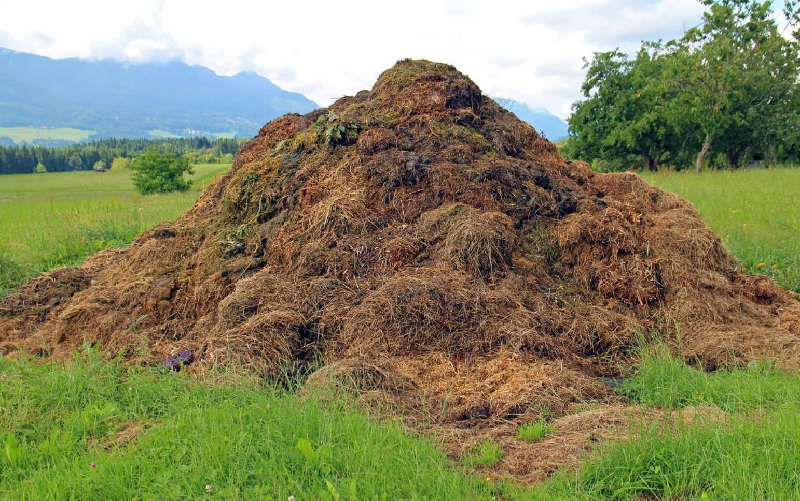
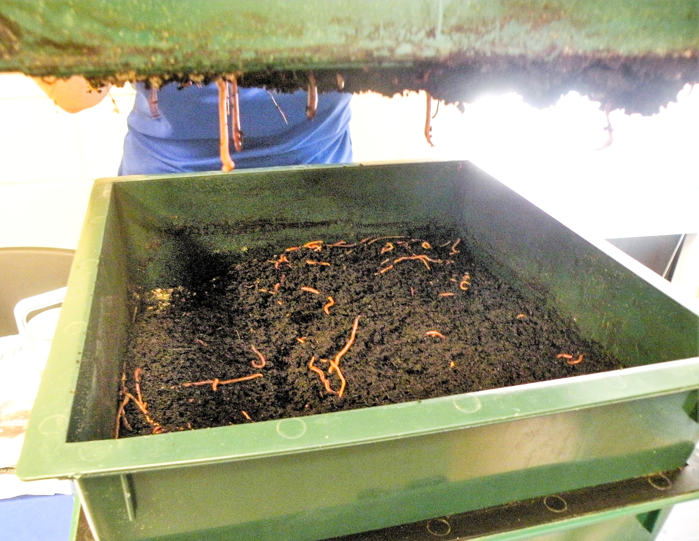
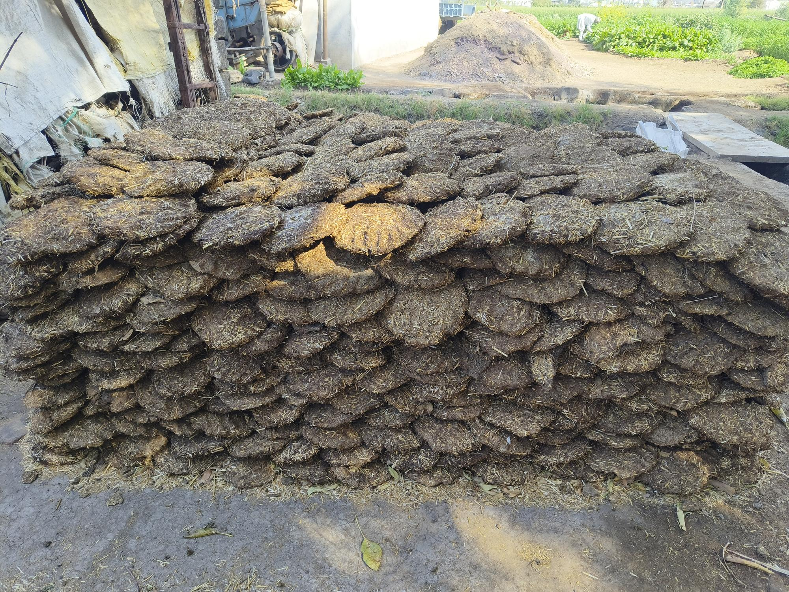

What is Organic Farming?
Organic farming is not just a method — it is a philosophy. It believes in working with nature, not against it. Instead of chemicals, it uses compost, manure, and natural processes to grow food that is safe, nutritious, and sustainable.
From healthy soil to clean water and biodiversity, organic farming builds a balanced ecosystem for future generations.

Methods of Organic Farming

Types of Organic Fertilizers


